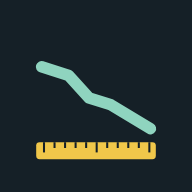
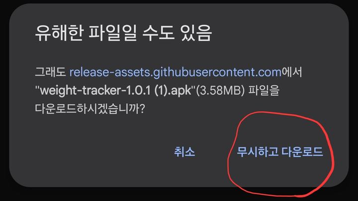
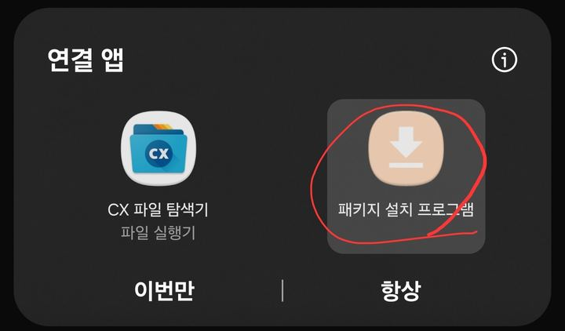
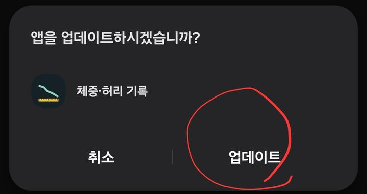
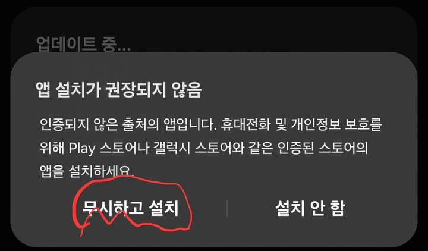
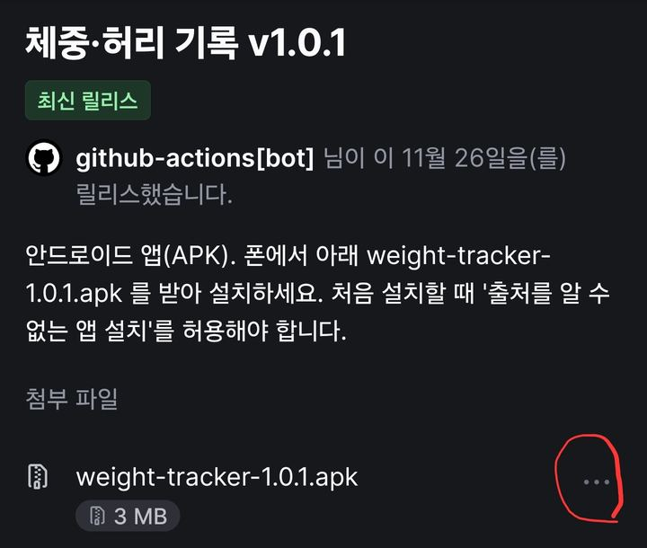
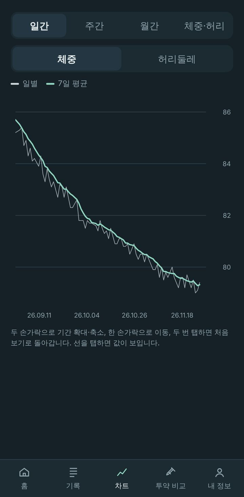
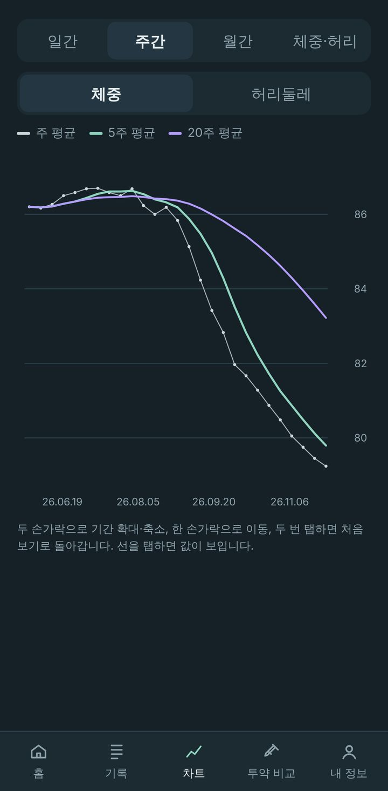

체중·허리 기록
매일 체중과 허리둘레를 적고, 변화를 그래프로 보는 안드로이드 앱입니다. 광고가 없고, 기록은 내 폰 안에만 저장됩니다. 크롬 데이터를 지워도 기록은 그대로 남습니다.
APK 받기버전 1.1.0 · 약 3.7MB · 안드로이드 전용설치하기
플레이 스토어 앱이 아니라서 설치 중에 경고가 몇 번 나옵니다. 아래 순서대로 누르면 됩니다.
- 위의 APK 받기를 누르면 Chrome이 "유해한 파일일 수도 있음"이라고 묻습니다. 무시하고 다운로드를 누릅니다.

- 다운로드가 끝나면 알림이나 다운로드 목록에서 파일을 엽니다. "연결 앱"을 물으면 패키지 설치 프로그램을 고릅니다.

- 처음 설치할 때는 "보안을 위해 이 출처의 알 수 없는 앱을 설치할 수 없습니다" 같은 안내가 뜰 수 있습니다. 설정을 눌러 이 출처 허용을 켜고 뒤로 돌아옵니다. 폰마다 문구가 조금 다릅니다.
- 설치를 누릅니다. 이미 설치한 폰에서는 사진처럼 "앱을 업데이트하시겠습니까?"로 나오고, 업데이트를 누르면 됩니다.

- "앱 설치가 권장되지 않음"이 뜨면 무시하고 설치를 누릅니다. 홈 화면에 아이콘이 생기면 끝입니다.


웹 버전에서 옮겨 오기
크롬으로 설치한 웹 버전을 쓰고 있었다면 기록을 한 번 옮겨야 합니다. 두 앱은 저장 공간이 따로입니다.
- 웹 버전에서 [내 정보] → 내보내기를 눌러 CSV 파일을 저장합니다.
- 새 앱에서 [내 정보] → 불러오기 (CSV)로 그 파일을 고릅니다.
- 키·생년월일·성별·투약 설정은 파일에 없으니 [내 정보]에서 다시 입력하고 [저장]을 누릅니다.
- 새 앱에서 기록이 모두 보이는 것을 확인한 뒤에 웹 버전을 지우세요.
기록하기
- 날짜는 오늘로 맞춰져 있습니다. 체중과 허리둘레 중 잰 것만 입력하고 [저장]을 누릅니다.
- 저장하면 입력칸이 비고, 아래 카드에 그날 기록이 보입니다. 고치려면 [수정], 지우려면 [삭제]를 누릅니다.
- 아침에 체중, 저녁에 허리둘레처럼 나눠 입력해도 먼저 넣은 값은 그대로 남습니다.

홈 화면
그래프로 보기
[차트] 탭에서 흐름을 봅니다. 두 손가락으로 벌리거나 오므리면 기간이 늘고 줄며, 두 번 탭하면 처음 보기로 돌아옵니다.



옆으로 밀어서 다음 화면을 볼 수 있습니다.
일간·주간·월간은 위쪽 [선] / [캔들] 버튼으로 캔들(봉) 차트로도 볼 수 있습니다. 붉은 봉은 증가, 푸른 봉은 감소입니다. 봉을 누르면 시가·종가·고가·저가가 나옵니다.
위고비 · 마운자로 비교
[내 정보]에서 "위고비/마운자로 투약 중인가요?"를 켜고 약과 투약 시작일을 저장하면, 아래에 [투약 비교] 탭이 생깁니다. 시작일 체중에서 몇 % 줄었는지를 임상시험 투약군·위약군 평균과 겹쳐 보여 줍니다.

백업하기
- 내보내기: [내 정보] → [내보내기]를 누르면 공유 창이 뜹니다. 구글 드라이브나 메신저의 "나에게 보내기"에 저장해 두세요. 파일은 엑셀에서도 열리는 CSV입니다.
- 불러오기: 폰을 바꿨다면 그 파일을 새 폰에서 [불러오기 (CSV)]로 고릅니다. 같은 날짜는 파일의 값으로 덮어씁니다.
- 초기화: [내 정보] 맨 아래 [모든 기록 삭제]에서 '초기화'라고 입력하면 모든 기록과 내 정보가 지워집니다.
업데이트하기
새 버전 파일을 받으면 설치할 때와 같은 순서로 열고 업데이트를 누릅니다. 앱을 먼저 지우지 마세요. 덮어 설치하면 기록이 그대로 남습니다.
자주 묻는 질문
경고가 왜 이렇게 많이 뜨나요?
플레이 스토어를 거치지 않고 직접 받은 앱이라서 폰이 확인을 여러 번 합니다. 이 앱은 인터넷으로 아무것도 보내지 않지만, 믿을 수 있는 사람에게 받은 파일만 설치하세요.
내 기록이 다른 사람에게 보이나요?
아니요. 기록은 이 폰 안에만 저장되고 어디로도 전송되지 않습니다. 앱을 만든 사람도 볼 수 없습니다.
앱을 지우면 기록은 어떻게 되나요?
함께 지워집니다. "설정 → 앱 → 저장공간 → 데이터 삭제"를 해도 지워집니다. 가끔 내보내기로 백업해 두세요.
아이폰에서도 되나요?
아니요. APK는 안드로이드 전용이라 아이폰에는 설치할 수 없습니다.
인터넷이 없어도 되나요?
네. 설치한 뒤에는 인터넷 없이 모든 기능을 쓸 수 있습니다.